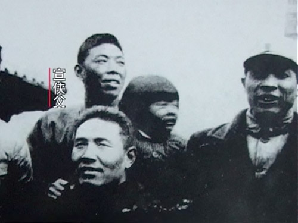
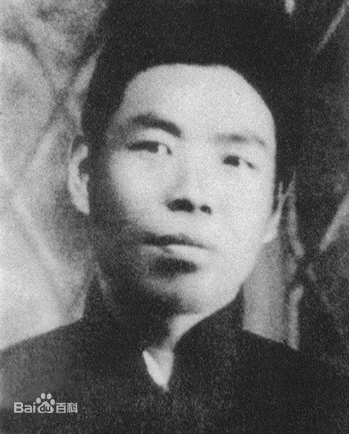
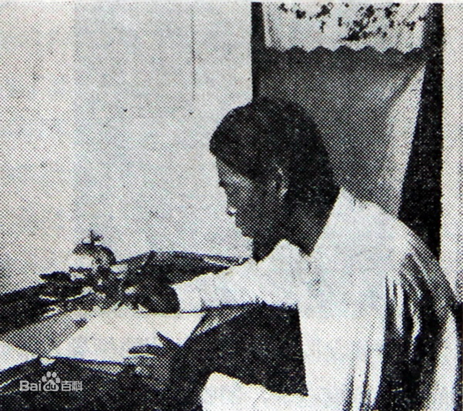

历史人物
统一战线留忠魂——宣侠父
-

宣侠父
浙江诸暨人。中国共产党早期的优秀党员，党在白区的坚强战士和杰出的政治活动家。1916年考入浙江省立特种水产学院，毕业后以第一名的成绩获准公费去日本留学。在日本认真研究马克思主义，积极参加社会活动，被母校停止公费留学待遇。1922年回国，和共产党人俞秀松、宣中华在杭州、台州等地从事革命活动。1923年在杭州加入社会主义青年团，不久，转为中国共产党员，曾为“左联”秘密盟员。 -

人物事迹
宣侠父是黄埔一期学生中的特殊人物，因蒋介石破坏以党治军的制度而抗命不从，被蒋介石开除出黄埔。1929年后，宣侠父在国民党军队中从事兵运工作。抗日战争爆发后，任国民革命军第十八集团军（八路军）高级参议，从事统战国民党高级将领的工作，因工作卓有成效，招致国民党当局忌恨，1938年被暗杀于西安。 牺牲时任八路军总司令部高级参议。 -

诗三首：
其一： 神州遍地涨烽烟，莫只登楼意黯然。 惟有齐心来革命，一条生路在人前。 赴潼前一日为之道志弟书此，越东侠父于少华山麓。
其二： 中华民族命何穷，都在铁蹄践踏中。 今日工农齐奋起，国民革命快成功。 国民革命无工农群众参加断无成功希望·侠父
其三： 人民渐自梦中回，革命呼声惊似雷。 同志如今须记取，自由要用血争来。 诗作见于烈士遗墨，当是第一次国内革命战争时期所写。
返回目录